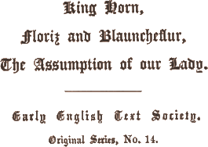

General Introduction and Table of Contents (separate file)
King Horn (separate file)
Floris and Blancheflur (separate
file)
Introduction to The Assumption of Our Lady
The Assumption of Our Lady
Notes to The Assumption of Our Lady
Glossary (separate file)

1866 (re-edited 1901; reprinted 1962)
Price 30s.
§ 1. Introductory, p. xlv.
§ 2. Setting, p. xlv.
§ 3. The rise of the Legend, p. xlvii.
§ 4. The place of our Legend of the Assumption, p. xlix.
§ 5. Origin, p. xlix.
§ 6. Other English Versions, p. lii.
§ 7. Manuscripts, p. liv.
§ 8. The Time and Place of Composition, p. lvi.
§ 9. Versification, p. lviii.
From the valorous atmosphere of King Horn and the sentimental atmosphere of Floris and Blauncheflur, to the devout atmosphere of the “Assumption,” is a very appreciable change. At the same time the oriental romance of Floris and Blauncheflur and our legend, also, no doubt, of eastern origin, betray their common descent in a certain similarity of sentimental tone; and further, both romances, Germanic and oriental, share to some extent their romantic colour with the religious legend. It is perhaps the love of this romantic colour, which the three poems have in common, that has brought them together in the Cambridge MS. (Gg. 4. 27. 2) which forms the nucleus of the present volume, though the fact that the existing manuscript is but a fragment, forbids any certain conclusion as to the tastes and probable purpose of the collector.
In turning from the romances of King Horn and Floris and Blauncheflur to the legend of the Assumption we are entering the most productive field of early English literature. The religious element is the predominant element in Anglo-Saxon poetry. Christianity, from the very first, was received in England with an extraordinary warmth. In the year closely following the conversion of England there came into bloom a rich Christian poetry which soon took the place of, almost displaced, the earlier national epos.
The Norman Conquest was the means of introducing a flood of romances of every conceivable origin, and probably explains the slight revival of genuine English romantic traditions such as those of Horn, Havelok and Waldef, and possibly of Wade. But through the period, immediately following the Conquest, of the domination of the French and Latin languages in English literature, there had persisted a thread of xlvi the old English tradition in the homilies which continued for a long time to be industriously read and copied. With these in the 12th century were associated new homilies (cf. R. Morris, Old English Homilies), the direct lineal descendants of those of Alfric and Wulfstan, and in the beginning of the 13th century, in the northern midlands the metrical Ormulum, which betrays some French influence in a somewhat scanty French element in its vocabulary and in its proper names (cf. F. Kluge, Engl. Stud. xxii), but which nevertheless is composed quite in the style and manner of the earlier time.
When, after two centuries, the English language had to some extent come back into use as a language of literature, Cynewulf also found successors, and the legend flourished once more. Indeed in this new period it came to flourish to an extent hitherto unparalleled. This revival was due in part, no doubt, to the story-telling spirit so manifest in this period, and in part to the fact that this period marks the highest point in the progress of saint worship.
Probably the earliest of these newer legends were those of St. Juliana, St. Margeret and St. Katherine, which are written in rhythmical alliterative prose clearly manifesting the earlier English tradition, but which give premonition of a new era in the ring of a lyrical tone and in the already richer, more highly coloured diction. (Cf. C. Horstmann, Altenglische Legenden, Neue Folge, p. xv, Heilbronn, 1881.) Quite romantic in tone and colour are the very early, fine poems, in four-line strophes, of Katerine, Gregory, Mergrete, and the Magdalen, all of which unfortunately are preserved only in later, remodeled forms, and are perhaps only scant remains of an originally much richer literature. (Cf. Horstmann, as above, p. xlii, 225, 242.) According to Horstmann, the poems of Margaret and Gregory belong to the most beautiful productions of the early English language. Even more finely constructed, but rather lyric than narrative in form, are the few legends which fall in with the movement, influenced by French and especially strong in the South of England shortly before 1250, toward the development of the religious lyric. (Cf. R. Morris, Old English Miscellany.) Of these semi-lyrical legends, Eustas (MS. Digby 86) and the legends of the Psalter (MSS. Digby and Auchinleck) are composed in six-line strophes. (Cf. Horstmann, pp. 211, 228.) Other poems of this period, such as the xi Pains of Hell, already have the short riming couplet. Nearly to this same time belongs the Assumption of our Lady, in riming pairs and also in the Southern dialect.
The Assumption thus finds its setting among the very finest of the English legendary poems. According to Horstmann (as above, p. xliii): xlvii ‘Never again has legendary poetry reached the same height of pathos, the same purity and beauty of form as in these older legends. The period immediately following shows a decided falling off in poetic power and in talent for form. The tone loses in depth and warmth, the style in fullness and swing.’ In the last quarter of the 13th century, as we shall see, the legendary poetry entered the service of the church, and was worked over by the monks into great collections for reading in the services. This no doubt explains the remarkable falling off in poetic style and quality.
The story of the riseI.22 of the legend from the Acta Martyrorum, the earliest records concerning the saints, to the martyrologies, the records of the recognized martyrs in each individual church, which in turn were expanded after the 8th century, from mere lists of names to the Latin legendaries upon which rest the OE. collections of legends,—all this forms an interesting chapter in the history of the church and in the history of literature, but has no place here except in so far as it throws light on the origin of the poem with which we are concerned. The relation too of the legend to the service of the church has a very much involved history. The Lectiones or ‘readings’ in the daily offices of the church were of three kinds: either (1) selections from the Scriptures, or (2) selections from the commentaries or homilies of the church fathers, or (3) the Acta Sanctorum. The last kind came generally to be denoted as Legenda, or ‘legends.’ At first treated with distrust, in time the legend came to play an important part in the service of the church. It seems to have first found its full development in the ‘nocturns,’ into which it was admitted apparently by the Benedictines in the 8th century. There it first appeared in an amplified and extended form.
The height of the legend’s development lies in the 12th and 13th centuries, and coincides with the period (Horstmann, as above, p. xv) of full bloom of the cult of the saints. At this time the number of saints’ days multiplied. Each church honoured its special saints. One celebrated not alone the death-day of the saint, but that of the burial and the translation. New saints came to be venerated, and long-forgotten ones were again brought to memory. The relics and traditions were collected, and the lives were written. Special church offices were made for them, and hymns and songs were written in their praise. In these new offices of the church the legend found its use. These special festivals often fell on week-days, and one had to fill in lectiones for which nothing xlviii was ready. Under these circumstances the legend offered itself as if expressly fitted, and became the key to the entire religious celebration. In this situation, amid these most favourable circumstances, the legend developed its full power, and must have been an important factor in the religious life of the period.
In addition to this place of the legend in the offices of the church, it came later to be read within, or instead of the sermon, after the Evangelium during the mass, and in the popular language. From very early times it was permitted to the clergy, in place of original productions to read the homilies of others, and to this usage, no doubt, we owe such collections as the Blickling Homilies, Bede’s Homiliae de tempore, Aelfric’s collections, the Ormulum, etc. That the early legends were intended to be delivered as sermons, or in sermons, is apparent from the frequent direct appeals to the congregation, and from their association, in the MSS., with homilies.
During the 11th and 12th centuries the homily, the older element, continued to prevail even on saints’ days, but in the 13th and 14th centuries the homily came to be in great measure displaced by the legend on the festival days of the saints, and was used only for Sundays and for the Festae Christi. To make a complete liber festivalis, either to the book of homilies was joined a legendary for saints’ days, or later the legendary, on the other hand, absorbed the book of homilies, as happened for instance in the case of the Legenda aurea, which marks the final step in the development of the Latin legendary, and which presents the homilies of the Festae Christi, perhaps the remains of the book of homilies, side by side with the legends. In the north of England the collection of Evangelia dominicalia, that is to say the gospels for Sundays and Festae Christi, which, according to the original plan, embraced only the Sunday gospel readings with their expositio and a narratio (i.e. a legendary narrative as an illustration) came in later MSS. to be supplemented by a collection of legends, evidently intended to complete the work by providing also for the saints’ days something in the place of the proprium sanctorum (i.e. gospels for saints’ days). In the South of England, on the other hand, the complete liber festivalis grows out of the legendary, which comes to include the homilies.
To sum up, the place of the evangelium in the mass for saints’ days comes to be filled by the legend, while in the mass on Sunday, the evangelium is still retained, though probably often supplemented by an expositio and a narratio, or legendary tale as illustration for the expositio. In consequence the liber festivalis falls into two parts, the xlix temporal (for Sundays and Festae Christi) and the sanctoral, or legendary for the saints’ days.
What then was the original function of our legend of the Assumption? The evangelium and the homily, as we have seen, still retained their places, in part at least, in the temporal, where the Assumption would belong, but were supplemented by legendary anecdotes, or even by entire legends. Was our poem originally intended for a place in the religious service, or was it rather a lyrico-romantic production with a sacred theme? What was the original purpose of the poem, it is not easy to determine. In actual use, however, it seems to have played a double role. In two of the six MSS. in which the present version of the story is preserved (viz. the Chetham MS. and Cambr. Univ. MS. Gg. 4. 27. 2.), the legend is associated with romances, and we must infer that it is the romantic quality of the legend that has appealed to the collectors. (Cf. also the slightly different version in the Auchinleck MS.) In the other four MSS., however, the associations, as will be seen later, are distinctly religious, though Harl. MS. 2382 seems rather a literary collection than one designed for church use. In all of the MSS. the poem is referred to as a tale (cf. Harl. MS. 2253, near the end, where occurs the line, This tale y haue tolde wit mouthe), and as a lesson, that is to say a ‘reading,’ and if we may judge by the general tone of the different versions, the place for this ‘reading’ was quite likely the church. Even if the reading was not confined to the church, it usually was of a professionally religious character as we must judge from the remarkable conclusion in Brit. Mus. Add. MS. 10036:
We biseche þee for alle þat hereþ þis vie
Off oure ladi seynt marie,
That Ihesu schelde hem fram grame
Fro dedly synne and fro schame,
Ne mysauenture schal bi falle þat man
That þis a vie here can.
Ne no womman þat ilke dai,
That of oure ladi hereþ þis lai,
Dien ne schal of hure childe;
For oure ladi hure schal be mylde.
Ne noone mys-auenture schall be-falle,
In felde, in strete, ne in halle,
In stede þer þis vie is rad,
For oure ladi hure sone it bad,
And þe archibisshop, seynt Edmound,
Haþ graunted xl. daies to pardoun
To alle þat þis vie wol here,
Or with good wille wol lere. vv. 879-896.
The legend of the Assumption, according to ten Brink (Geschichte der engl. Litt. I, p. 331), had its origin in the second half of the 4th century. Tischendorf (Act. Apocr. p. xxxiv, Leipzig, 1866) believes a still earlier origin to be not impossible. The story had a wide circulation in the East. Besides the Greek versions we know (cf. F. Gierth, Engl. Stud. vii, pp. l pp. 1-33) of three Syriac, one Arabic, and one Sahidic version. Even in Ethiopia there exists a similar tale (Journ. of Sacr. Lit. and Bibl. Rec., Jan. 1865, p. 48). From the orient the legend spread into the literatures of western Christendom. Tischendorf (as above, p. xliii.) gives a list of a dozen Latin manuscripts of the legend, and from these he offers critical editions of two versions, which, with Gierth, we may indicate as: (1) Transitus Mariae, A (Tischendorf, pp. 113 ff.) in Latin prose; (2) Transitus Mariae, B, a fuller version differing from A in some respects, notably in the absence of the scene in which Thomas appears.
Other Latin versions are those published by Th. Graesse: (1) The section, De assumtione beatae Mariae virginis in Jacobi a Voragine Legenda Aurea,I.23 ed. Th. Graesse, Dresdae et Lipsiae, 1846, pp. 504 ff., (2) De modo assumtionis beatae Mariae, published by Graesse, as above, pp. 517 ff.
In French may be mentioned the version by Wace (L’Établissement de la fête de la conception Nôtre-Dame dite la fête aux Normands. Caen, 1842, or, in another edition, Vie de la vierge Marie, Tours, 1859). For account of other unpublished French versions cf. E. Stengel, Mittheilungen aus franz. hss., etc., Halle, 1873, pp. 20 ff.
In German we may mention the version by Conrad v. Heimesfurt, about 1200 (HZ. viii, pp. 156 ff.).
Our story in its present form seems to have made its first appearance in England in the French version, above mentioned, by Wace, in the second quarter of the 12th century. (Cf. however, Assumptio sanctae Mariae virginis, Blickling Homilies, E.E.T.S. 58, 63, 73.) Of an English version of the present form of the legend, for English hearers, we have no trace before the middle of the following century, from which it seems we are to infer that the legend remained the property of the French clericals about a century before coming into general circulation in the English-speaking world. This earliest English version of the story is the one of the present edition in short riming couplets.
What then was the source of this earliest English version? Was it derived from Wace, or does it rest on one of the Latin versions? Wace’s poem consists of three parts (cf. Gierth, Engl. Stud. vii, p. 6): (1) the institution of the feast of the Conception of Mary, (2) her birth, rearing and marriage, (3) her death and burial. For the first part his source seems to have been the Miraculum de conceptione sanctae Mariae; for the second part, the Evangelium de nativitate Sanctae Mariae. About these li two works, which he has followed almost word for word, Wace grouped a number of minor anecdotes and commentary notes from Anselm, Eadmer, and other of the church writers of the 11th and 12th centuries. For part (3) Wace seems certainly to have used the Latin version of the story, designated by Tischendorf as Transitus Mariae, B.
The English version has in common with Wace’s poem some traits that in the other versions are wanting. For instance, only in these two versions is it related that Mary cared for and instructed the maidens in the temple. (Engl. vv. 60 ff.) Another feature in common is contained in the speech of Christ to his mother shortly before her death, in which he promises her, La porte d’aidier auras A trestous ceus que tu vorras (Wace, p. 71, vv. 6, 7), which the English poet seems to have expanded into a number of verses, in which is promised pardon to every sinner who will betake himself to Mary.
On the other hand, in several instances the English agrees more closely with the Latin, where Wace has considerably abridged, and in these instances the French cannot have been the original of the English poem. A Latin original seems much more probable. The first two-thirds of the English poem corresponds almost exactly with the Tischendorf Latin B version. On the other hand, the introduction of Thomas in the last one-third of the poem is a feature of the Latin A version, but is foreign to B. In other respects the English poem corresponds more closely to a third Latin version from which Tischendorf quotes variants, the Codex Laurentius. The English has in common with the Legenda Aurea the peculiar trait of making no mention of the miraculous transit of John from Ephesus. Again, some traits in Latin B do not appear in the English version, and, on the other hand, the English version contains a few traits not to be found in any of the other versions spoken of.
From the above we must conclude either that the English version rests on a very composite version of which we do not know, or that the composer of the English version was very eclectic, and selected his material from very different sources. The latter explanation seems the more probable one. In this connection it is important to note an observation first made by Zarncke and afterwards corroborated by Kölbing (Engl. Stud. ii, pp. 281-2) that the different prose versions of legends influence each other reciprocally, producing mixed or composite forms of the legend (mischredactionen) whose exact descent it is impossible to trace. It is here that the learned element makes itself felt and differentiates the tradition of a legend from the tradition of a romance or of a song. The influence of this learned element we must probably assume in explaining lii the tradition of our legend of the Assumption, which seems to be a mischredaction.
The story of the Assumption seems to have circulated, as we have seen, both as a romantic story and as a devout legend. It must have been in the first of these two rôles that it was admitted to the famous collection of romances in the Auchinleck MS. Here the story appears in a new dress, composed in six-line strophes, with rime couée, probably under the influence of the ballad singers. The content of this version (cf. M. Schwarz, Engl. Stud. viii, pp. 428 ff.) seems to be substantially that of the earlier version of the present volume. The first stanza of this version is,—
Who so bereȝ palm, þe tokne is þis,
Þat in clene lif he is;
Þat is to vnderstonde:
Hit is tokning of loue,
Þat god him haueȝ wraththe forȝoue,
Þat bereȝ palm on honde.
The Assumption also forms a member of the Southern cycle of legends, which go to form a legendary. In this rôle it appears in Harl. MS. 2277, “a parchment book in a long 4to, imperfect at the beginning and elsewhere; which formerly contained the legends of the Saints, etc., according to the course of the year, written in very old English verse.... The handwriting of this MS. seems to be older than that year” (1320). The MS. contains 69 legends, of which number 38 is Assumpcio S. Marie, in 246 long riming lines, the first two of which are,—
Seinte marie godes moder : fram þaposteles nas noȝt
Þo þe holi gost a wit sonedai : among hem was ibroȝt.
This version seems to rest on the Legenda AureaI.24 as an original, although the incident of the tardy arrival of Thomas, which is contained in the Latin, is wanting in this version.
This same version appears in a later MS., Bodl. 779,I.25 of the 16th century. In this MS. the legend cycle is greatly extended by the addition of a whole new series of legends. The number of legends in this MS. reaches the number of 135, of which the version of the Assumption is number 57.
Another version of our legend is that belonging to the Northern legend cycle, and preserved in two MSS.: Harl. 4196 and Cott. Tiber. E. VII,I.26 of which the latter is the older, but the former the more complete. These l3 two texts correspond word for word, and apart from possible scribal blunder, letter for letter, abbreviation for abbreviation. Harl. MS. 4196 is a large folio on parchment, evidently of about the middle of the 14th century, and written in a beautiful large hand of the Northern type. It has 258 double-columned leaves, and contains (1) several parts of the gospel in verse, which end at fol. 132 a, then after a blank page, (2) collection of legends in verse, with special title and an introduction of eight verses (folios 133-205), then as a sort of appendix, (3) a metrical gospel of Nicodemus (folios 206-215 a), and (4) the Prick of Conscience in verse. This version, which appears as number 8 in the second division, the legend collection of the Harl. MS., and whose text is identical in the two MSS. above mentioned, opens as follows,—
Of mari milde now will I mene
Þat of all heuyns es corond quene
And lady of all erth to tell
And also Emperise of hell.
Another version belonging to the Southern cycle is that contained in the younger MS. of this cycle, Lambeth MS. 223, a 4to parchment from the beginning of the 15th century. (Cf. Horstmann, Neue Folge, p. xlvii. and Notes.) In this MS. the Assumption appears, not in the legendary itself, but as the fifth and last division in the temporal, which is prefixed to the Southern cycle of legends. This version has frequent rimes within the verse, and the last half verse has four stresses. The version agrees in many respects with the Northern one just described and also with the earlier Southern version, the one of our present volume. The opening lines are as follows,—
Herkkenes alle gode men, ȝif ȝe ben wise and slye
And I wole to ȝow rede þe assumpcioun of Marie
How she was from erþe taken into heuen on hegh
And þere she shal euer wone and sitte Ihesu negh.
Another English version of our legend is that incorporated into the Cursor Mundi (vv. 19993-20064). This version is translated into a Northern dialect from a Southern English poem. (Cf. Cursor Mundi, ed. by R. Morris, Introduction by Dr. Haenisch, pp. 42 ff.)
And sant edmund o ponteni
Dais o pardun þam gis tuenti
In a writt þis ilk i fand,
He-self it wroght, ic understand.
In sotherin englis was it draun
And turnd it haue i till our aun
Langage o northrin lede,
Þat can nan oþer englis rede.
The poet of Cursor Mundi follows the Southern author nearly line for line, so that there cannot be the slightest doubt that he refers to the Southern English version of the present volume. But now and then liv he has made additions, for some of which Haenisch finds no source. (Horstmann believes this version to have been translated from Wace.)
The fact that the poet of Cursor Mundi “attributes his original to Edmund of Pontenay was caused by a misunderstanding of the lines 893-96 of the SE. Assumption” (Haenisch).
Cursor Mundi, vv. 20057-60.
And sant edmund o ponteni
Dais o pardun þam gis tuenti;
In a writt þis ilk i fand
He self it wroght, ic understand.
Assumption, vv. 893-6.
And þe archibisshop seynt Edmound
Haþ graunted xl. daies to pardoun
To alle þat þis vie wol here
Or with good wille wol lere.
Still another version, which formed part of a work by Barbour, the author of the Scotch collection of legends, is mentioned in his prologue, but, along with the rest of this work referred to, is unfortunately lost.
Still further deserving of mention are (1) the prose version contained in the ‘Festial’ of Johannes Mirkus (Horstmann, Neue Folge, pp. cix. ff.), a collection of sermons, derived for the most part from the Legenda Aurea and written about 1400 for the festivals of the church, Festae Christi and Saints’ days;I.27 and (2) that contained in the English translation of the Legenda Aurea (cf. Horstmann, Neue Folge, pp. cxxx ff.). “The Assumption of oure ladi” stands 111 in Harl. MS. 4775.
The above enumeration of versions of our legend will demonstrate effectively its popularity in England, also its use in the service of the church. Further investigation is needed to determine more exactly the interrelations of the various versions, though it is doubtful if such an investigation would produce any very conclusive results, since, as suggested above, many versions of the legends were probably mixed versions (mischredactionen).
The earliest English version, the one of the present volume, is known to exist in six manuscripts.
1. Cambr. Univ. MS. Gg. 4. 27. 2. (For description cf. introduction to King Horn, p. xxviii.) This fragmentary text (240 lines) is printed in the present volume.
2. Chetham MS. 8009, Manchester, a collection of romances and legends. (For description cf. Engl. Stud. vii, 195 ff., viii, pp. 1 ff.)
3. Cambr. Univ. MS. Dd. 1. 1., a long narrow MS. from about the middle of the 14th century and written in a large, informal, very legible hand. The content of the MS. is the Northern collection of Evangelia lv dominicalia, with which is included, in addition to the sermons with legends attached for the festivals of John and Peter and Paul, also our Southern legend poem of the Assumption, which is perhaps to be attributed to the scribe (named Staundon), who is Southern. (For a full account of this MS. cf. Horstmann, Neue Folge, p. xxvi. and pp. lxvii. ff.) This text of 544 verses has not been printed.
4. Cambr. Univ. MS. Ff. 2. 38, a paper MS. in an informal but legible hand by a Southern scribe. It contains miscellaneous religious writings, the list of which I neglected to copy. Our poem is followed by “þe lyfe of seynt Kateryn.” This text of 770 verses has not been printed.
5. Harl. MS. 2382, a paper book in 4to, in an informal hand, and containing nine miscellaneous theological poems by Lydgate, Chaucer, etc. Poem number 1 is Lydgate’s Life of the Virgin Mary, four books at the end of which stands this note, Explicit quartus liber de sancta Maria. The second poem is our present version of the Assumption, evidently the end of a sequel to Lydgate’s poem, for at the end stands the note, Explicit Sextus liber Sancte Marie, which shows that two other books were added to the original four of Lydgate, written in stanzas, to King Henry V. The other contents of this MS. seem also to be literary, and are as follows: 3. Oracio ad Sanctam Mariam, 4. The Testament of Dan Johan Lydgate, 5. Fabula Mornalis de Sancta Maria, Chaucer’s Prioress’s Tale, 6. Vita Sancte Cecilie, Chaucer’s Second Nonne’s Tale, 7. De Sancto Erasmo Martire, 8. Testamentum Cristi, 9. The Childe of Bristow. This text of 710 verses is in part reprinted in the present volume.
6. Brit. Mus. Add. MS. 10036, a small parchment volume (about 8 × 4) of 100 folios, written in black letter, perhaps in the second half of the 14th century, and containing a miscellaneous religious collection: (1) History of the siege and destruction of Jerusalem by Vespasian (ff. 1-61), (2) The Assumption of the Blessed Virgin (ff. 62-80), (3) A question of the peynes of helle (prose, ff. 81-84), (4) Here bigynneth the thre arowis that God schal schete at domys-dais apon hem that schullen be dampned (prose, ff. 85-91), (5) The seven petitions in the Pater Noster (prose, ff. 91-94), (6) Ave Maria, Pardons and Indulgences for repeating (prose, f. 94), (7) Ten Commandments trans. and expl. (prose, ff. 94-96), (8) The 51st Psalm, Miserere mei, trans. into English verse (96-100). This text, in 904 verses, is printed in the present volume.
If for the sake of conformity with the German investigations, we designate Cambr. MS. Gg. 9. 27. 2. as A, Brit. Mus. Add. MS. 10036 as B, Harl. MS. 2382 as C, Cambr. MS. Dd. 1. 1. as D, Cambr. MS. Ff. 2. 38. as E, and Chetham MS. as Ch., then the interrelations of the different lvi texts of this version are about as follows (F. Gierth, Engl. Stud. vii, pp. 1 ff.). A and B form a special group as opposed to C, D, E, on the one hand, and to Ch. alone, on the other. No one of these versions is the direct source of any other. The different texts may be characterized somewhat as follows:
A offers the best text as far as it goes.
B introduces many important changes, and seems to be somewhat confused in the order of events, but in the passages preserved intact, preserves the text and the rime better than do C, D, or E.
C gives best the true course of the story, but often alters the rime, in particular, individual rime words.
D has many gaps, and is particularly defective after the entrance on the scene of Thomas.
E stands in closer relation to D than to C, and often takes an intermediate position between C and D. Ch. (cf. M. Schwarz, Engl. Stud. viii, p. 460) we must regard as a compilation of different MSS., and owes its origin perhaps to oral tradition. In the case of Ch., as in the case of the other texts of this version, it will be safer not to set up any diagram representing the interrelations of MSS., since these MSS. are no doubt all of them influenced by written as well as by oral tradition, and, as has been pointed out above, there is at least a possibility, as in the case of Ch., of mixed versions. In dealing with legend, even less than in dealing with romance, does one have to do with a purely epic growth.
We have already seen that the author of Cursor Mundi attributes the authorship of this version of the Assumption to Edmund of Pontenay (pp. liii, liv, above). But we have also seen the probable source of his error. In one thing the Northern writer is no doubt right, when he says (v. 20061), “In sotherin englis was it draun.” The poem is undoubtedly Southern in origin. To gain more definite knowledge is not easy. The rimes, our usual guide in such cases, in this poem are very uncertain. The writer’s ear seems to have been not a delicate one. He does not distinguish carefully open ę̨̄ and close ẹ̄, e.g. here : lere 4 Add., wel : del 212 C, 206 D, 218 Add., 256 C, 262 Add., were : here 716 Add., etc.
In a similar way he does not distinguish carefully open ǭ and close ọ̄, e.g. gone : done 86 Add., 594 H, done : one 416 Add., 562 H, 588 H, 750 Add., anon : done 530 Add., sloo : doo 508 H, þo : do 262 D, etc. In consequence we are not able to apply the -wǭ-, -wọ̄- test with any degree of certainty. OE. -wā rimes, now with ǭ, now with ọ̄, e.g. fro : lvii so 342 Add., 324 D, so : fo 374 Add., tho : so 278 H, also : mo 17 C, etc.; but so : to 179 C, 184 Add., 214 C, 296 C, 300 Add., 314 H, 344 Add., 718 Add., 904 Add., atwo : do 280 H, whom : come 306 F (wham : cam 336 Add.), etc.
In the same way OE. æ, and shortened OE. ǣ, rimes now with a, now with e, e.g. was : gracias 310 Add., 774 Add., Thomas : was 656 C, Iosephas : was 582 H; but fless : was 34 C, best : lest 392 H, fed : bed 124 C, 132 A, les : wes 566 D.
In the same way OE. y rimes now with e, now with i, e.g. stede : dude 57 C, 62 Add., 88 Add., 800 Add., 82 C, 624 Add., kyng : geng 220 C, him (= ‘them’) : kyn 642 Add.; but mankyne : pyne 426 A, Inne : kynne 430 A, 478 A, 360 H, 338 D, 346 D, it : pytt 506 H, þerynne : synne 604 H, blisse : gladnesse 384 H, etc.
In the same way in the 3rd plur. pres. indic., the ending is sometimes -eþ, sometimes -n, e.g. listneþ 8 C, serueþ 418 H, goth 476 H, 593 A, buþ 22 C, 26 C, etc.; but ben 25 A, beon 141 C, 149 A, etc., and the rime kenesmen : ben 122 C, 130 A.
Details may be multiplied indefinitely to show the general Southern character of the language, e.g. the verbal endings in -i or -y, as blessi : herkni 7, 8 C, loky 47 C, gladie 75 C, etc.; the infinitive preserving its final -n, as quene : bene 6 Add., bene : ysene 40 A, gon : on 140 C, quen : ben 98 C, 104 A, 114 C, 120 A, etc.; but beo : gleo 10 C, etc.; the present participle in -and, as lepand : hande 614 A, etc.; the use of the palatalized consonants, as in yyeue 566 H, ayene 597 H, etc.
The dialect then certainly is of the Southern part of England; but the rimes do not enable one to locate the dialect more exactly. The composition is undoubtedly that of a scholar in whom one might expect a wider range in pronunciation. Doubtless both Southern and Midland dialects were familiar to him. The pronunciation, however, of OE. y as e and of OE. æ as e belongs to the East Southern, and we shall probably be safe in calling the dialect a compromise between East Southern and East Midland.
The time of composition was probably not later than 1250. The OE. ā had regularly changed to ǭ (if we neglect an isolated instance like thomas : ras 822 A); but I find no certain instance of lengthening in open syllables, and further, the oldest MS. (C) is not much later than 1250, as we have seen. It preserves the unmonophthonged eo, e.g. weop 29, treo 35, heo 36, beo 37, iseo 38, etc.
lviiiThe legend, like the romance of Floris and Blancheflur, is composed in short riming pairs. Each verse nominally has four metrical stresses. The rime may be either masculine or feminine. Frequently assonance takes the place of perfect rime; e.g. weop : fet 30 C, gode : fote 70 Add., þolen : y-boren 220 Add., etc.
I.22 Cf. Horstmann, as above, pp. xxviii ff.
I.23 A legend cycle composed in Latin prose by the Italian Jacobus a Voragine, Bishop of Genoa.
I.24 Cf. M. Schwarz, Engl. Studien, viii, pp. 461 ff. But cf. ten Brink, I, p. 336; Horstmann, Neue Folge, p. xxxix.
I.25 Cf. C. Horstmann, Altengl. Legenden, p. xxxiv, Paderborn, 1875.
I.26 Cf. Horstmann, Neue Folge, pp. lxxviii ff., Text, pp. 112 ff.
I.27 The sermons are arranged according to the calendar, so that here the book of homilies and the legendary are at length completely formed into one. In the oldest and best MS., Cott. Claud. A. II, the Assumption is number 52.
Cambr. Univ. MS. Gg. 4. 27. 2.
Brit. Mus. Add. MS. 10,036, lf. 62.
MErie tale telle ihc þis day
Of seinte Marye þat swete may.
Al is þe tale and þis lescoun
4 Of hire swete assompcioun,
Hu heo was fram erþe ynome
In to blisse wiþ hire sone.
Þe kyng of heuene hem blessi
8 Þat þis listneþ and wel herkni.
Alle moten hi iblessed beo,
Þat vnderstonde wel þis gleo.
IN honorance of ihesu cryst
Sitteþ stille and haueþ lyst;
And ȝif ȝe wille to me here,
4 Off oure ladi ȝe mai lere,
Floure of heuene, ladi and quene,
As sche auȝt wel to bene,
To wham aungeles doun here myȝt
8 To serue hure boþe day and nyȝt.
Par auenture ȝe haue noȝt iherde
How oure ladi went out of þis werde:
Sitteþ stille and herkeneþ to me;
12 Now ihesu cryst oure helpe be!
¶ Whan ihesu crist was don on rode,
12 And þolede deþ for vre gode,
He clepede to hym seint Iohan
Þat was his oȝe qenes man,
And his oȝene moder also;
16 Ne clepede he hym feren no mo.
¶ Whan ihesu crist was doun on þe rode
And þolede deþ for oure goode,
He callide to hym seynt Iohan,
16 That was his fleschli kynnes man.
His moder swete he dide also;
He callid no men mo him to.
Mine men þat aȝte me to loue,
24 For whan ihc com fram heuene abuue,
Me haueþ idon þis ilke schame,
Ihc naue no gult; hi buþ to blame.
To mi fader ihc bidde mi bone
28 Þat he forȝiue hit hem welsone.”
But þei haue wille to louen me
28 For wham I hange on þis tree.
The Iewis me deden mychel schame;
Ther of hadde I neuer blame.”
Jesus entrusts Mary to John.
¶ Marie stod and sore weop;
Þe terres feolle to hire fet.
No wunder nas þeȝ heo wepe sore;
32 Of soreȝe ne miȝte heo wite nomore,
Whenne he þat of hire nam blod and fless,
Also his suete wille was,
Heng Inayled on þe treo.
¶ Þo spac ihesu wordes gode,
44 Þer he heng vpon þe rode,
And sede to his moder dere,
“Ihc schal þe teche a trewe ifere,
Þat trewliche schal loky þe,
48 Þe while þat þu in erþe be.”
Ihesu spak þo wordes goode,
As he henge on þe rode,
And seide to his moder dere,
48 “I schal þee take a trewe fere,
[leaf 63]
That trewly schal kepen þee,
While in erþe þou schalt be.”
¶ Þo seide vre lord to seint Iohan,
“For my loue qep me þis wymman.
Ȝem hire wel wiþ al þi miȝte
52 Þat noman do hure non vnriȝte.”
In to þe temple mid hire he nam,
And also sone so he þar cam,
Among þe lefdis in þe stede,
56 God to serui he hire dude.
To þe temple he hure nam,
60 And also sone as he þer cam,
God to serue he hure dede,
Amonge þe nunnes in þat stede.
Poure and hungrie wel faire he fedde,
And sike heo broȝte in here bedde.
Nas þer non so hol ne fer,
68 Þat to hire nadde mester.
Hi louede hure alle wiþ here miȝte,
For heo seruede hem wel riȝte.
He wakede more þane slep;
72 Hire sone to serui was al hire kep.
To him heo clupede wiþ Murie steuene,
And hire he sente an aungel fram heuene,
Te gladie hire him self he cam,
76 Crist þat fless of hire nam.
Sche woke more þan sche slepe;
Hure sone to serue was al hure kepe,
To hym sche callid with rewful steuene,
80 And he hure sent an angel fro heuene,
To glade hure, hym self he cam,
That of hure bodi flesche nam.
Christ sends to Mary an angel messenger.
¶ Seint Ion hire kepte and was hire dere;
He was hire eure a trewe fere.
Nolde he neure fram hire gon;
80 Al þat heo wolde he dude anon.
Þe whiles hi were in þat stede,
Al þat heo wolde he hit dede.
Whane heo hadde beo þer longe,
84 Ten wyntere hem amonge,
Hire sone wolde heo come hym to,
Whane he hit wolde, hit was ido.
Seynt Iohan hure keper was hure dere,
84 And to hure was a trewe fere.
Ne wolde he neuer fro hure gone;
Al þat sche wolde he wolde done.
While sche was in þat stede,
88 Al þat sche wolde he hure dede.
When sche hadde þer longe ben,
That faire ladi, heuene quen,
Than wolde hure sone sche com him to.
92 When he wolde, hit was do.
¶ He sente hire on Aungel of heuene,
88 And grette hire wiþ murie steuene.
In þe temple he bad hire bede;
Þer liȝte þe aungel in þat stede,
And sede, “lefdi ful of grace,
He sent to hure an angel of heuene,
That gret hure with myry steuene,
Ther sche was and bad hure bede,
96 Lyȝth an angel in þat stede,
[leaf 64]
And seide, “ladi, ful of grace,
The angel announces that Mary will be summoned to heaven.
He þinkeþ long hym to se;
108 Ne schaltu her no lenger beo.
He wile senden after þe,
Fram heuene adun of his meigne,
And fecche þe in to his blisse,
112 Þat eure schal leste wiþute misse.
Þer he is kyng þu schalt beo quen;
Al heuene for þe schal bliþe beon.”
The þynkeþ longe him to see;
Ther fore most I no lengere be,
He schal sende after þee
116 Of heuene ferde moche plente,
And brynge þee in to his blisse,
That euer was and now is.
Þer he is kyng, þou schalt be quene;
120 Al heuen ryche bliþe schal bene.
[leaf 64, back]
And alle him þenkeþ swiþe longe
Til þou comest hem amonge.”
¶ Þanne ansuaredi vre lefdi,
116 To þe aungel þat stod hire by,
“Artu Mi sones Messager,
Þat bringest me þis greting her?
Haþ he set me any day
120 Aȝenes þat ihc me greþi may,
And nyme lyue of mine kenesmen,
And myne frend þat wiþ me beon,
And of him þat haþ me cloþed and fed,
124 And don also my sone hym bed?”
Than answerede oure ladi,
124 And seide to þe angel, “belamy,
Art þou my sones massagere,
That bryngest me þis bodes here?
Haueþ he me sette any day,
128 Aȝens when I me greithe may,
With my frendes and my kynnes men,
And with hem þat I in erþe haue ben,
And hem þat I haue fedde and clad,
132 And don al þat my sone hem bad?”
¶ Þo sede þe aungel, “ihc telle þe;
Þu ne schalt beo her bute daȝes þre.
Þe þridde day we schulle come,
128 Aungles fram heuene aboue,
115“And fette þe wiþ murye song;
For after þe us þinket long.”
Tho seide þe angel, “I sei þee;
Thou schalt be here but daies þre.
The þridde dai we schal come,
136 Alle ix. ordres fram heuen a boue,
“And fecche þee with myry songe;
For after þee vs þinketh longe.”
I ne dar no leng dwelle her,
For ihc was sent as Messager.
To þe apostles ihc schal gon,
140 And bidde hem alle, eurech on,
Þat hi beon her þe þridde day;
No leng abiden I ne may.”
[leaf 65]
Ne mai I no lengere abide here,
For I am sent a massagere.
I schal to þe apostles sone anone,
148 And seie to hem sundry, on and one,
That þei ben here þe þridde dai;
No lengere abide I ne mai.”
Mary attires herself, then prays to her Son.
¶ Þo he hadde ydon, to heuene he steȝ;
144 Marie abod and was wel sleȝ,
And nam þat palm þat hire was broȝt,
And of þat bode heo hadde gret þoȝt,
In to hire Chaumbre stille he nam;
148 And so sone so heo þar cam,
He dude of al hire hatere,
And wessch hire body wyþ clene watere,
Þo heo hauede so idon,
152 Al y newe schrud heo dude hire on.
To derie me hit were vnriȝt.
Sone, help me nu ihc haue ned,
164 Þat ine haue of þe feond no dred,
For wiþ þe giles þat he can,
He bitraieþ many man.
She announces her departure to her friends.
“Leue sone, ne ȝef him noȝt,
168 Þat þu hauest so dere iboȝt.
Sune, þu art ful of pite;
For senful manne bid ihc þe,
Þat þu for þin holy grace,
172 ȝef hem boþe wille and space,
“Leue sone, ȝeue hym nouȝt
Man kynde þat þou hast bouȝt.
Mi sone, þat art ful of pite,
176 For man kynne I praie þee,
That þou, for þi holi grace,
Ȝeue hem boþe myȝt and space,
Hem to amendy er hy beo ded,
Þat þe deuel hem do no qued.
Þenk, sone, þat þu hast hem wroȝt,
176 And þat þu hauest hem dere iboȝt.
For hem þu þoledest pine and wo;
Wite hem wel fram here fo.”
Hem to amende or þei ben dede,
180 That þei haue of þe deuel no drede.
Thynke, leue sone, þou hast hem wrouȝt,
And dere þat þou hast hem bouȝt.”
And bidde ihc ȝou par charite,
Ȝef ihc habbe eny þing mis wroȝt,
188 Telleȝ hit me, ne heleþ hit noȝt.
Ihc wulle amende, and þat is riȝt
Þat my saule ne beo idriȝt.
Where fore I praie ȝow par charite,
Ȝif I any þinge haue mys wrouȝt,
192 Seieþ me now; for-hele ȝe nouȝt.
[leaf 66]
I it wole amende with my myȝt,
That my soule haue no vnplyȝt,
¶ Alle þat stoden hire by,
Of þat tiþinge were sory,
And sede, “lefdi, hu mai hit be?
200 Hu schulle we liue wiþ outen þe?
[No gap in MS.]
Lefdi dere, what hastu þoȝt?
Reu of vs; ne wend þou noȝt.
117“In soreȝe and in Muche wo
204 Schulle we lyue beo þu vs fro.”
Alle þat weren hure bi,
Off suche tiþinges weren sori,
And saide, “lady, how mai þis be?
204 How schulle we lyuen with oute þee?
Ladi, þou hast vs serued so;
Alas, how schulle we parte a two?
Swete ladi, what is þi þouȝt?
208 Rewe on vs; departe vs nouȝt.
“In moche sorwe and in myche wo
Schulle we lyue, be þou a go.”
John comes and inquires the cause of her grief.
¶ Þanne spak vre lefdy
To hem þat were hire by,
“Leteȝ beon; ower wepinge ne helpeþ noȝt;
208 Habbeþ ioye in ower þoȝt.
Þe while ihc am her, wakeþ wiþ me;
Hit doþ me god þat ihc ȝou se.
Nabbeþ no drede ac witeþ hit wel;
212 Of pine ne schal ihc þole no del.
Ne schal no soreȝ come me to,
For my sone hit wule so,
Mi body ne schal no pine þole,
216 For he was þer of ibore,
He þolede pine him self for me,
Þo he deide vpon þe tre.
[leaf 66, back]
Haueþ no drede in wel;
Of peyne schal I þole no del.
[No gap in MS.]
Mi bodi mai no peyne þolen,
220 For he was þer of y-boren.
He þoled deþ him self for me;
He honged nailed on þe tree.
He þat is almiȝtful kyng,
220 Schal me sende of his geng.
Iohan and þe apostles, whei hy be,
Alle hi schulle come to me.”
Mi sone þat is kyng+ of heuene,
224 Schal me sende worde wel euene;
Iohan and þe apostles, where so þei bene,
Schulle alle come for to sene.”
Þe while he spac þus to þis men,
224 Of al þat þing nuste noȝt Ion.
He com to speke wiþ vre lefdi,
And hym þuste heo was sori,
As sche so spak to þe mon,
228 Off al þat wist nouȝt seynt Ion.
He come to speke with oure ladi;
Ferli him þouȝt þat sche was sory,
And sede, “lefdy, what is þe?
228 For my seruise tel hit me.
Lefdi, what is þe ised?
Me were leffre to beo ded,
Þane iseo þe make such chere.
232 What is þe, my lefdi dere?
[No gap in MS.]
Ne schal ihc neure habbe blis,
Fort þat ihc wite what þe is.”
And seide, “ladi, what is þee?
232 What is þis folk þat I here se?
Seie me, ladi, what is þee?” he sede;
“For me were leuer þat I were dede,
Than I þee se suche semblaunt make,
236 “For schal I neuer suche a ladi take.
Hastou ouȝt herde þat I ne can,
Off me or of any oþer man?
Schal I neuer haue blis
240 Til I wite, ladi, what þee is.”
Mary consoles John.
Vre lefdi wep and Iohan also;
236 Trewe loue was bituex hem tuo.
“Lefdi,” he sede, “what is þe?
For my loue, tel hit me.”
Marie ansuerde wiþ Milde steu[ene],
118240 “A sonde Me cam while er fram h[euene],
The MS. ends here. Continued from Harl. MS. 2382.
[leaf 67]
Oure ladi wept and Iohan also,
For trewe loue was bitwene hem two.
Iohan seide, “ladi, what is þee?
244 For þi sones loue, seie þou me.”
Marie answerde with rewful steuene,
And seide, “me cam bode fram heuene,
Harl. MS. 2382, lf. 78, bk.
fro my sone a messynger;
he wołł no lenger that y be here.
but y wote that rueth me,
244 that y shałł departe fro the;
for thi loue and thi seruice
that thu me dost in al wise.
thu hast made me ofte glad;
248 thu has done as my sone bad.
my sone shal it yelde to the;
y wol hym pray when y hym se.”
Fro my sone a massagere;
248 He wol no lengere þat I be here,
Wite þou wel hit rewiþ me
That I schal, Iohan, parte fram þee.
For þi loue and þi seruyce
252 That þou hast doun on eche wise,
Thou hast me boþe fed and clad,
And doun also my sone þee bad.
My sone schal it wel ȝelde þee;
256 I schal him telle when I him se.”
Iohannes
Tho answerd to here seynt Iohan,
252 and was a fułł sory man),
“A, lady Marie, what shal y be
when y shałł the no lenger se?
my ioye thu art euery dełł;
256 no lenger in erthe worth y wełł,
now we shul departe a two.”
Than answerde seynt Iohan,
That was a ful sori man,
And seide, “ladi, how mai þis be
260 That I schal þee no more se?
Mi ioie, my blis, is doun eche del;
Ne schal me neuer worþen wel,
Sithen we ben parted atwo.”
when y am be-nome fro the,
to my body they do no foly.
Ihesu Crist oure allere dright,
119276 gef ham neuer that ilke myght.”
When I am parted, Iohan, fram þee,
280 That þei do my bodi none euelte.
My sone, þat woneþ in heuene liȝt,
Lete hem neuer þer to haue myȝt.”
The apostles arrive from distant regions.
Iohannes
seynt Iohan answerd tho,
“sey me, lady, if it is so,
that we shall departe atwo.
280 “swete lady, how shałł y do?
sey me þe tyme when it shal be,
that thu shalt to heuene te.”
Maria
she seid, “Iohan, that þou shałł se;
284 ne bide y here but dayes thre.”
Then was Iohan ful hertely sory.
“For soþe,” marie seide to Iohan,
“Bi þis and þe þridde day,
288 No lenger abide I ne may.”
[leaf 68]
When he it herde, he was sory;
Maria
[leaf 79, back]
“Nay,” she seid, “whi seist thu so?
296 angelis the shałł come to,
and loke to the where thu be,
erlich and late to comfort the.”
“Iohan,” sche seide, “whi seistou so?
300 Th[e] aungeles schal þee come to,
To kepe þee where so þou be,
Erliche and late to gladen þee.”
nota de apostolis omnibus miraculose.
when she spake to seynt Iohan,
300 thapostellis cam yn euerychon),
and none of hem wiste be-forn),
how thei were theder y com,
Whiles he spak so to seynt Ion,
304 Come þe apostles euerychon,
To gidre; but þei wist nouȝt
How þei weren to gidre brouȝt;
and seid, “lady, ne drede þou noght,
304 thi sone hath vs hider broght,
to knowe the for oure lady,
while that we bene the by.”
Off oþeres come ne wist none;
308 But of hure come bliþe was Ion.
He cust hem alle, so fayn he was,
And seide, “deo gracias;
Blessed, ihesu, be þi myȝt,
312 For it is faire and hit is ryȝt
[leaf 68, back]
That þi moder come to þee,
That sche faire welcom be
Of þine apostles þat most þee louen,
316 I ne wote how þei ben hidre ycomen.”
Than seide Petyr to seynt Ion,
“Whi art þou so sory A mon?
John bids them go and greet Mary.
(Not in Harl. 2382)
“Whi wepistou, and what is þee?
320 For felaschip telle þou me.
I schal þee seie, seynt Ion,
Whi I am so sory a mon,
But seie me furst, for godes loue,
324 Whi ȝe arn hider icome,
And weryn so wide isprad:
Seieþ what haþ ȝou hidre ilad.”
Tho seide Petyr a ferli þinge:
328 “I was fer hens atte my prechinge.
I was so henne in anoþer londe
And helde my boke in my honde,
And tauȝt men of my sermoun,
332 I ne wote how I cam to þis toun.”
So seide alle þat weren þere,
Suche wondre sawe I neuer ere.
None of hem ne wist þorw wham,
[leaf 69]
336 Ne what wai þei þidre cam,
Than seide seynt Iohan, “for soþe, I wys,
I schal ȝow telle what it is.
Comeþ wiþ me in to þis hous;
340 Oure ladi þer abideþ vs.
Sche ordeyneþ hure to fare vs fro,
For hure sone hit wolle so.
Hure sone haþ sent his messagere;
344 He wol no lengere þat sche be here.
And hider he haþ ȝow alle ysent
To kepe hure bodi when sche is went.
Bi fore hure knele ȝe alle bi-dene
348 And seieþ, ‘ladi, heuene quene,
Off alle wymmen, best þee be;
Thi sone vs haueþ sent to þee,
To kepe þee and do þi wille:
352 Vs þenkeþ wel þat it is skille,
That heuene and erþe bowe þee to,
For þi sone hit wol so,
Thi sone, þat is heuene kynge,
356 And alle þing haþ in his kepinge.’”
Than comen þe apostles alle,
121And bi hure bigan to falle.
Vp ros oure swete ladi
360 And kist þe apostles bi and bi.
[leaf 69, back]
Off here come sche was glad;
Alle þei dide þat sche bad.
Sche asked hem how þei come þere,
364 That sprad so sundry were.
The seide in ful good þouȝt,
“Thi sone vs haþ hidre ybrouȝt
To kepe þee, and by þee by;
368 Ther fore we comen to þe, lady.”
Mary bids them keep her body from the Jews.
Maria
“Blessid,” she seid, “be my sone.”
308 glad was she was of here come.
“y am his moder,” so seid he,
“glad ther for may y be.
Ful bliþe sche was of here come;
“Blessed,” sche seide, “be my sone!
now when it is my sones wille
312 to hym y come, and that is skyle,
to my body ye loke al so,
that my foos ne come ther to.
loketh bothe nyght and day,
that þe Iewis bere it not away.
thay wold it brenne or do shame.
324 Ihesu, for thi holy name,
gef ham neuer strengthe to haue
my bodi in erthe for to laue.”
[leaf 70]
Kepiþ it boþe nyȝt and dai,
That no Iewe stele it awai.
Thei wolde it brenne or do it schame;
388 But ihesu, for þi holi name,
Late hem neuer þer-to haue myȝt,
For sikirli hit were vnryȝt.”
[leaf 80]
Thei answerd, “for sothe, y-wys,
328 it shal be as thi wille ys.”
The whiles Marie badde here bone
122to the apostellis euerychone,
Thei seiden, alle soþe, I wys,
392 “Hit schal be, ladi, as þi wille is.”
Whiles oure ladi spak+ so
To þe apostles þat come hure to,
when our lady herd this steuene
the angel seid here then to,
340 ful of blisse was she tho.
to here bed she went to aray,
a-boute þe tyme of hy mydday.
Iohan the apostell sate here by,
344 to kepe here body sikerly.
As soone oure ladi herd þat steuene
That þe aungel seide hure to,
404 Wel ful of Ioie was sche þo;
Sche ȝede to hure bedde and lai,
A bowte þe tyme of myddai;
Iohan and þe apostles weren hure bi,
408 To kepen hure as oure ladi.
[leaf 70, back]
Sche badde Iohan and þe apostles alle,
To kepen hure what so bi falle.
Jesus tells the angels about His life on earth.
Sitteþ now stille, boþe more and lesse,
412 And herkeneþ of þe moche blesse
Off Ihesu, þer he come so lyȝt:
He dide his moder ful moche riȝt,
As a sone auȝt his moder to done,
416 He callid þe aungeles euerychone,
And alle þe mayne þat was in heuene,
And seide to hem with mury steuene:
“Commeþ with me to my lemman!
420 Sche is my moder; hure sone I am;
Off hure I toke flesche and blode.
And sithen I hange on þe rode,
I þat euer was and ay schal ben,
424 In al þis blisse þat ȝe here sen,
I hadde reuþe on al mankyne,
That alle went to helle pyne.
I made man to serue me,
428 And þorw þe appel of a tre,
That adam toke and ete it Inne,
To helle he went, and al his kynne.
123“Hit rewid me, and for-þouȝt sore,
432 And I it wolde þole no more.
[leaf 71]
I lyȝt doun, and man bi-cam,
And of þat maide flesche nam.
odor suauissimus de paradiso venit
emonge them alle sone ywys,
a swete smełł cam fro paradys,
swete it was, and ferly,
348 that alle þat were tho here by,
bothe yong and olde and euerychone,
thei fełł a-slepe, and þat anone.
alle the slepte, saue oure lady.
He announces that He will bring Mary to heaven.
nota de transitu sancte Marie
352 herkeneth now, y tełł yow why.
and als sone thei were a-slepe,
it gan to thondre al vnmete,
and the erthe so swithe gan quake,
356 as al the world shuld to-shake.
Marie awaked then seynt Iohan
and the apostels euerychon,
thre maydens þat were the[re]-ynne,
360 and no man els of hire kynne.
“waketh now, and slepe ye nought!
Sone y worth to heuene be broght;
now is tyme y were a fare,
364 Shałł y neuer more suffre care.”
And atte þe last þei dide wel more,
With oute gult þei me swongen,
444 And to a piler þei me bounden.
Nailes þei smyten in my fette;
Off blode myne handes weren rede.
Myn hert þei stongen with a spere;
448 That sawe alle þat weren þere.
Ther I hange nailed on þe tree,
My modre was wel wo for me,
And also was hure cosin Ion.
452 I callid hure to me soone anon,
And seide, ‘Iohan, for my loue,
Kepe wel þis wyf; I am hure sone.’
Boþe þei wenten þo fro me;
456 Al one I hanged on þe tree,
[leaf 71, back]
Mi soule fram my bodi I nam,
In to þe pyne of helle sone I came.
Alle my frendes þat I þer fonde,
460 I toke hem oute with my ryȝt honde,
Adam and Eue and many mo,
I dide hem oute of helle go.
When I hadde harwed helle,
464 And don as I ȝow telle,
And fet adam fro þe quede,
The þridde dai I ros fro dede.
Fram erþe to heuene I cam;
468 God and man, bothe I am,
In heuene and in erþe is my myȝt;
124“Now I wol forþe in ryȝt,
That my modre be me bi;
472 This tyme I wol for þi,
Comeþ with me with mury songe,
And do we hure come vs amonge.”
Conversation between Jesus and Mary.
Ihesus
Tho cam Iesus from heuene,
with angelis and archangelis seuene,
yn to hire boure with mery song;
368 moche merthe was them among.
no wonder thogh ther be blisse
in eche place ther Ihesus ys.
none of them that were there
372 a soche blisse saw they nere.
amonge al blisses of the trone
Mary knew here leue sone.
[leaf 72]
Tho seide alle þat were þere,
Suche a blis sawe þei neuer ere.
Amonge þat Ioie and þat glewe,
484 Oure ladi, hure sone knewe.
When sche him sawe, sche was glad;
Listeneþ þe bede þat sche bad:
“y-blessed mote that tyme be
that thu were borne of me.
hit is sene, y am thi moder
380 when thu comest þi self hider.
Furst þou sendest thyn apostelis to me;
now thu comest with thi meyne,
to fette me vnto that blisse
384 that euer lasteth with ałł gladnesse.
Sone thu art hider y-come
with thyn angelis from a-bone.
do þou now what thi wille ys;
388 me hath longed to the, y-wys.”
“Sone, blessid mote þou be,
488 That þou bicome man of me;
Hit is wel sene, I am þee dere,
Now þi self art comen here.
Thine apostles þou sendist furst to me,
492 And now þou art come with þi meyne,
To fecchyn me in to þi myȝt:
Was neuer modre sone so bryȝt.
Mi leue sone, now art þou come
496 With þi meyne, here a bone.
Do, my sone, þat þi wille is;
To þee me þinkeþ longe I wis.”
Ihesus
Then Iesus to Marie sede,
[leaf 81]
“Moder, with ioye y wołł the lede.
of all wymmen the worth best,
392 in heuene blisse that shal lest.
ther y am kyng; thu shalt be quene;
in grete ioye thu shałł bene.”
[No gap in MS.]
“Modre,” he seide, “come with me;
500 Of alle wymen best þee be.
[No gap in MS.]
Thou schalt to heuen and be made quene;
Wel bliþe may þine hert bene.”
Jesus promises mercy to man for Mary’s sake.
Iesus
“Moder, y sey, drede thu noght;
ne stode it neuer on my thoght,
for thu shalt no deuyłł se,
404 y wołł go be-fore the;
ne þou shalt no deuyłł herene,
but only me and my ferene.
Maiden and moder, euer thu be wełł;
408 thu shalt of sorwe wete no dełł.
alle the spirettes that meten with the,
buxom to the shałł they be.
Moder, one thyng y gef to the;
412 thu shalt be in heuene with me.
“Moder,” he seide, “ne drede þee nouȝt;
Ne come it neuer in my þouȝt;
Ne wille I neuer more þole
512 That any of hem come þee bi fore;
Ne schal þou neuer se-ne here
But me and aungeles, þine fere.
Moder, a ȝift I schal þee ȝyue,
516 Thou schalt with me in heuene lyue,
And more schal I ȝeue þee;
Al heuene companye schal serue þee.
“moder, for the loue of the,
y wołł haue mercy and pite
of al man kynde thurgh þi prayere,
416 yf þou ne were, they were for-lore.
“Modre, for þe loue of þee
520 I schal haue mercy and pite
Off al man kynne for þi praiere,
That were forlorn ȝif þou ne were.
nota bene de seruientibus sancte Marie deuote
“and of them namelich
that the serueth trulich,
and that to the done mercy crye
420 and sey, ‘help vs, dere ladye,’
In what synne that thei be,
[leaf 81, back]
moder, for the loue of the,
“thogh a man had lad his lyf
424 in onde, in synne, and in strif,
yf he on his last dawe
wepe and crye, and to the be-knawe,
and telle it oute vnto the preste,
“Ȝif any haue ben al his lyue
532 In hede synne, maide or wyue,
And he wille, on his last þrowe,
Schryue him and ben y-knowe,
And telle it, ȝif he haue þe prest,
Mary is borne to Heaven.
full wełł y shałł his bone here,
for thi loue, my moder dere.
Alle tho that thu wolt bidde fore
444 and blesse the tyme þat thu were bore.
of alle thyng y-blessid thu be,
for that y bidde, thu grauntes me.”
Oure ladi knelid him bi forn,
And seide, “þe tyme þat þou were born,
Ouer alle oþer blessed þou be,
560 For alle þat I wol, þou grauntest me.”
Ihesus assumpsit animam matris
and when he had the soule hent,
and she was fro the body went,
Then all the verdoune of heuene
[leaf 82]
456 fett that soule full aboue;
with the verdoune to heuene thei come,
with gret ioye she was yn nome.
she was made quene of heuene
460 and blessid hire sone with mylde steuene.
The apostles in procession bear the body through Jerusalem.
when y first to erthe came,
468 of this body flesħ y name.
y was of this body bore,
ther-for, Petre, go thu be-fore,
and thi bretheren forth with the
472 vnto Iosaphatħ that vale,
and leueth it there sone anone;
When I furst in þis worlde cam,
Off hure bodi flesche I nam;
Off hure bodi, I was born,
588 Petyr, go forþe þou be forn,
Thou and alle þine feres with þee,
To Iosephat, to þat vale,
And leiþ þe bodi in a stone;
and drede ye nothyng of your foone,
To Ierusalem thurgh that toune
476 goth feire with youre processione.
foure of them shul bere þe bere,
for one shal kepe my moder dere.
and for no thyng dredeth ye,
480 for y my self wol with yow be.”
when Ihesus had thus y-seyd,
and the body in bere was leyd,
he yeaue them alle his blessyng,
484 and styed to heuene, þer he was kyng.
which blessyng he geue tiłł vs,
oure blessid lord, swete Iesus.
Tho to them seyd seynt Iohan,
488 “go we theder right anone,
and gray we tħis processioune,
[leaf 82, back]
And go we syngand thurgh þe toune.”
¶ To hym þo seide seynt Ion,
608 “Felawes, go we soone anon,
And turne we þis processioun,
And synge we faire þorw þis toun.”
foure of the apostelis that ther were,
492 that holy body fourth dud bere.
ful mery thei song, and that was right;
many tapers ther-with thei light.
The Iewis that were Cristes foone,
496 this thei herd sone anone.
[See the parallel lines to these, below, on page 130, col. 2.]
The Jews attack the procession, but are rendered motionless.
thei asked what was the crye.
we seid it was seynt Marie,
that seynt Petre and his fere
500 bare Marye apone a bere.
nota contra iudeos
“Allas,” quod the Iewis, “for shame,
yf thei scape, we bene to blame.
arme we vs swithe anone
504 and let vs take them euerychone.
that body also, take we it,
and cast it in-to a foule pytt.
Cast we it in a foule sloo,
508 and moche shame we it do.”
Tho cam thei lepe thedeward;
that be-fełł them swithe hard.
two of the Iewis that there were,
512 were honged ouer the bere.
nota miraculum
Ihesus Crist wold se no shame,
by his moder swetely came.
ful sone had thei goddes grame;
516 he them made bothe holt and lame.
A Jew repents and receives his strength again.
of alle þe Iewes ther was none
that euer myghte further gone.
one of them that there were,
520 had knowed Petre be-fore.
Ther was a Iew hem amonge,
612 Off þe apostles harde þe songe.
To þe beere he cam lepand,
And as he wolde lai on his hande;
[No gap in MS.]
[No gap in MS.]
That þou was of Ihesus companye.
Thou seidest with wordes and with þouȝt,
632 ‘For soþe þat þou knewe him nouȝt.’
Praie þi lord of moche myȝt,
And his moder þat art so bryȝt,
That he me help at þis stounde,
636 For I was neuer so harde ybounde.
As I þee helped atte þi nede,
Ȝelde me, Petir, now my mede.”
we shal alle bidde for þe than,
to Ihesu Crist that is a-boue,
540 for his owne moder loue,
he gef the myght for to go,
and brynge the oute of this woo.”
nota conuersionem Iudei
The Iewe that honged apone the bere,
544 answerd then as ye may here,
and seid, “y be-leue, vnder that fourme,
on Ihesu Crist, Maries sone,
that Iewis peyned on the rode,
548 with-outen gilt, for oure gode,
and for vs he lost his lyf,
that Marie bare, maide and wif.
y be-seche that he me brynge
552 of this peyne, thurgh your biddynge.”
The Iewe þat henge apoun þe bere,
Answerde anone as ȝe mai here,
“I leue wel, and better I schal done,
656 On ihesu crist, godes sone,
That Iewes diden on þe rode,
And for vs he schedde his swete blode,
That marie bare in hure lyf,
660 Clene maiden and clene wyf;
He brynge me, I praie it him,
Oute of þe wo þat I am Inne.”
Peter christens the Jew and ordains him priest.
Crist vnderstode the Iewis bone.
he was holpe, and that anone;
on feet and hand he yeaue hym myght,
[leaf 83, back]
556 and alle his lymes for to right.
he gan to stonde vp anone
130before the Iewis euerychone.
he that was bothe halt and lame
560 be gan to preche in Cristes name,
and seid, “worship we euerychone
that soche a miracle hath done.”
As soone as he hadde seide þis bede,
664 He was al hole in þat stede:
Off fote, of honde, he hadde myȝt;
Alle his lymes bi come ful ryȝt.
He stode vp swiþe anone
668 Bi-fore þe Iewes euerechone,
That suche a myracle haþ done,
Ihesu crist, godes sons,
Of a wilde hounde haþ made a lomb,
672 To preche his worde in eche a lond.
The palme þat Petre had in hond,
572 he toke it hym, thurgħ goddes sond,
and bade hym goddes word to telle
to the Iewis that were so felle.
That palm þat Petir helde in his honde,
He toke it him þorw godes sonde,
And bad him godes wordes telle
684 Among þe Iewes þat were so felle.
Iudeus conuersus predicabat ita christum
Tho he spake the fourthe day,
xx thousant, and somdel mo,
thurgh the word þat he spake tho.
all the apostolis that þer were,
580 that holy body fourth thei bere
So he spak þe furst day,
That he turned to godes lay
Twenty þousand and sommedel mo,
688 Thorw wordes þat he spak þo.
[See the parallel lines to these, on p. 127, col. 1, at foot, and p. 128, col. 1, at top.]
Foure of þe apostles þat were þere,
That swete bodi forþe þei bere,
The Iewes þat were godes fone,
692 Thei herde þe cri sone anone,
And þei asked what was þat crie,
And men seiden it was mari,
That seynt Petir and his fere
696 Bare þare apoun a beere.
[leaf 76, back]
“Alas,” seide þei, “for schame,
Ascape þei vs, we schulle haue blame.
Arme we vs alle sone anone,
700 And take we hem alle þer þei gone.
That bodi þat þei bere, nyme we it,
And cast we it in a foule pit,
Or brenne we it, and do it somme where,
704 Or cast we it in a foule sere.”
[Not in it]
Thei comen lepand þiderwarde,
131And þat hem fel swiþe harde.
Ihesu wolde nouȝt þat schame;
708 He made hem boþe blynde and lame.
Off hem alle, was þer none
That myȝt a fote on erþe gone.
Here mouþes were to here nek went;
712 Thei þouȝt alle þat þei were schent.
Boþe here feet and here handes
Where bounde with stronge bandes:
Ful sore bounden þei were,
716 For þei ne myȝt go ne here.
Than comen here frendes hem to,
And seide, “alas, whi leie ȝe so,
In ȝoure armour so fast ycliȝt,
720 That beþ so faire and so bryȝt?
[leaf 77]
Ȝoure speres, ȝour schildes, helpeþ ȝow nouȝt;
Telleþ vs what ȝe haue þouȝt.”
Thei answerd nouȝt þat leyen þere,
724 For þei ne myȝt hem noȝt here,
But somme of hem þat myȝt speke
Seide, “alas! who schal vs wreke?”
And euer þei cryede many a stounde,
728 “Alas, how harde we lie here ybounde!”
Off fyue þousand was þer none
That myȝt of þat stede gone.
Than seide some þat stode hem bi,
732 That hadde ysene þat ferli,
That ‘seynt Petir and his fere
Bare oure ladi on a beere,
“Thise men wolde hure haue nomen,”
736 And þus þei ben ouer comen.
The ladi þei wolde haue doun schame;
Ther fore þei hauen godes grame.’
The folke hem bad mercy to crie
740 To ihesu cryst of here folie,
And leue þat he is godes sone,
And siþen crysten men bi come.
The Virgin Mary’s body is laid in the tomb.
“We hope þat ihesu schal sone tyme
744 Delyuere ȝow of ȝoure pyne.”
[leaf 77, back]
Thei criede “mercy” with good wille,
Somme lowde and somme stille,
And ihesu, þorw his mochil myȝt,
748 Here feet and handes gan to ryȝt.
Thorw myracle þat þer was doun,
Bi-come cristene many on,
And leuede on cryst and criede mercy,
752 That none oþer god was so myȝty.
to the vale of Iosephas
to ley here, there here wille was,
[No gap in MS.]
582
and leid the body in a stone,
The apostles went forþe on here way,
To Iosephat, to þat Valay.
When þe apostles comen were,
756 Wel softe þei setten doun þe beere.
With gret deuocioun, euerychone,
Thei leide þe bodi in a stone,
Sepultura sancte Marie
ther-in was body neuer none.
frendes and sibbe that þer were,
for here wepte many a tere.
[leaf 84]
when she was in the ston done,
588 ayene thei turned euerychone.
all the apostelis then were sory
for the deth of oure lady;
and ther a voice cam them among,
592 that ne lasted not full long,
and bade them alle for to gone
where thei had for to done.
The apostelis went hem ayene
596 in-to the Burgħ of Ierusalem;
and as thei sate atte mete,
of many thynges thei gon speke.
als thei were out of that place,
resussitacio corporis Marie
Iesus, with his holy grace,
he gon to take vp anone
his moder body of the stone.
he hym self dud þerynne,
604 that neuer had y-done synne.
he wolde not in no manere
that the body lafte there.
133in that body he dud a leme,
608 brighter then the sonne beme,
and made here quene of heuene blisse;
in that place she was and ys.
And bileft alle in þat stede,
760 As oure ladi hadde hem bede,
And woke þer al þat nyȝt
With many torches and candle lyȝt.
On þe morwe when it was dai,
764 Thei loked where þat bodi lai.
Thei ouerturned þat ilke stone;
Bodi þei founde þer none;
But þei sawe in þat stede þana
768 Liand as it were a mana.
[leaf 78]
That manna bitokned hure clene lyf,
That sche was modre, maide, and wyf.
Tho wist þe apostles, I wis,
772 The bodi was in to paradis,
Also godes wille was.
Thei seide, “Deo gracias.”
Mary lets fall her girdle to Thomas.
he kneled adoune and seid, “lady,
620 now on me thu haue mercy.
lady, quene of heuene bright,
for thi mochel holy myght,
send me a token this ilke day,
624 soche thyng þat y bryng may
to my felawes, ther y ham fynde,
that y was toward þi berynge:
thei wol not leue þat y was there;
628 now graunte me, lady, my prayere.”
He knelede doun and seide, “ladi,
784 Off me, I praie ȝow, haue mercy.
Ladi, quene of heuene lyȝt,
For þine swete mychel myȝt,
Sende me token þis ilke day,
788 What þing þat I say may
To myn felawis, þer I hem fynde,
That I was toward þi buriynge.
Thei wil nouȝt leue þat I were;
792 Now graunt me, ladi, my praiere.”
nota de zona sancte Marie
a-boute here gurdel a mydełł sought,
that she hire self had y-wroght,
of siluer and gold wonde in palle;
632 a-doune to hym she lete it falle.
he toke that gurdełł in his hond,
and thanked here of here sond.
[leaf 78, back]
A-bowte hure myddel a seynt sche souȝt,
That sche hure self hadde wrouȝt,
Off silk and gold wounden in pal;
796 Doun to thomas sche lete it fal.
He toke þer þe gurdel in his honde,
And þanked hure of hure sonde.
The apostles find the tomb empty.
“where has thu so long y-bene?
644 we haue beried our heuene quene.
134
“thu lakkest euer at euery nede;
thu helpest neuer at gode dede.”
“sore me thenketh þat y nas here;
[leaf 85]
648 but y ne myght come no nere.
I-blessid be the quene of blys,
in the place there she ys,
for wełł y wote in my thought,
652 there ye here layde is she nought.”
“Whare hast þou so longe bene?
We haue buried heuene quene.
Thou helpest noȝt at no good dede;
812 Thou failest euer at most nede.”
“Sore me forþinkeþ þat I ne was here,
But I ne myȝt come no nere.
Blessed be sche, quene of blis,
816 In þat stede þer now sche is!
[leaf 79]
For wel I wote bi my þouȝt,
Ther ȝe hure left, is sche nouȝt.”
nota de verbis sancti Thome apostoli.
“be stille,” he seid, “brother Iohan,
why chide ye me so, one and one?
me thenketh ye can litel good,
“Be stille,” he saide, “broþer Iohan.
828 Whi chyde ȝe me euerychone?
I am ful wery man for-gone;
Me ne list answeri neuer one.
But I thanke oure lord god,
664 for y here saw bothe flesħ and blood,
how oure lady to heuene wend;
here is the token that she me send.”
832 I sawe hure with flesche and blood,
Ther oure ladi to heuene went:
Here is þe token þat sche me sent.”
Jesus appears to the apostles and blesses them.
nota de sepulcro Marie vacuo.
owte of þat that place then they yede,
676 and the tumba they vndede.
nothyng ther-on there thei founde
[leaf 85, back]
but a floure atte grounde.
Oute of þe place swiþe þei ȝede,
844 And þe tumbe þei vndede;
No þing þer Inne þei ne founde,
But a manere floure at þe grounde.
Manna
That flour manna was cleped
135680 that in the tumba was steked.
they went ałł a-boute þe tumbe
and kneled on the bare grounde,
and seid, “Ihesu, goddis sone,
684 ałł that thu sendes, it is wel-come.
Mightefułł is the heuene kyng;
and that we know bi thi sayng.
no man may know his priuyte,
688 nother his swete dignite.”
That floure was ‘manna’ yclepid;
848 Hit was in þe tumbe ystekyd.
Thei ȝeden alle abowte þe tumbe
And knelede on þe bare grounde,
And seiden, “ihesu, godes sone,
852 Al þi sonde be welcome.
Myȝtful art þou, heuene kynge;
That mai we wite bi þis tokenynge;
For no man mai wite ne se
856 What is þi derne priuete.”
Amonge þe apostolis alle a light,
the kyng that is in heuene bright,
and blessid ham alle in fere
692 emonge the angelis þat there were,
and seid, “my pees be with yow nowthe,
blessid ye be of goddis mowthe.”
Cryst of heuene, þat is so bryȝt,
Amonge þe apostles sone he lyȝt,
And gret hem alle yfere,
860 With aungeles fele þat with him were,
And seide, “now pees be with vs!
Blessed be ȝe,” seide Ihesus.
nota miraculum apostolorum.
A mysty cloude cam after thane,
696 and ouersprad them euerychone,
and bare them alle þer they were,
in-to the stede that they were ere.
Conclusion and invocation.
¶ This tale y haue tolde with mouthe,
with wordes that bene ful couthe.
it is cleped the Assumpcioun;
708 Iesus gef vs his benesoun.
Iesu crist, for his myght,
[leaf 86]
we pray to hym with herte light,
and with his holy grace,
136712 gef vs bothe myght and space,
soche workes for to worche,
thurgh the lore of holy churche,
that we may to heue[ne] wende,
716 that is with oute begynnyng and ende.
Amen!
WE biseche þee for alle þat hereþ þis vie
880 Off oure ladi seynt marie,
That Ihesu schelde hem fram grame,
Fro dedly synne and fro schame.
Ne mys auenture schal bi falle þat man
884 That þis a vie here can.
Ne no womman þat ilke dai
That of oure ladi hereþ þis lai,
Dien ne schal of hure childe,
888 For oure ladi hure schal be mylde.
[leaf 80, back]
Ne none mys auenture schal be-falle
In felde, in strete, ne in halle,
In stede þer þis vie is rad,
892 For oure ladi hure sone it bad.
And þe archibisshop seynt Edmound
Haþ graunted xl. daies to pardoun
To alle þat þis vie wol here
896 Or with good wille wol lere.
Ihesu, for þi modre loue,
That woneþ in heuene vs aboue,
Graunt vs, ȝif þi wille is,
900 The mochil Ioye of paradis!
A praier þer-to seie alle we,
A Pater noster pur charite,
And an Aue marie þer-to,
904 That Ihesus vs graunt so. Amen!
¶ Celi regina sit scriptori medicina.
Links generally lead to the next lower multiple of 4, corresponding to visible line numbers. In this section, missing commas in note references have been silently supplied.
4, C. lescoun, reading. Lat. lectiones.
7, 8, C. blessi : herkni. Cf. blessyth : herkenythe F, blis : herkenis D.
14815, 16, C. also : mo. H and F have also : two.
19-22. Add. Not in H or D, or F.
21-2, C. red : ded. The scribe has neglected to cross his d to make ð. D 21-2 has beth : deth.
17-44, C. Omitted in F.
29-30, C. weop : fet. let : fet in H and D.
33-4, C. fless : was. H and D have blode : mode.
41-2, C. Not in H, or F, or D.
51-56, C. In D (49-54) all is told in a command to John. F (25-32) follows D rather than C in rimes.
59-60, C. were : forbere. F (35-5) has saumpull : tempull. D (57-8) has exemple : temple.
61-2, C. þore : more. Cf. F (37-8) more : ore, D (59-60) more : lore.
63-4, C. Not in F or D.
69-70. fedde : bedde. Cf. F (43-4), D (65-6): Therfore þey loued hur well all (D is substantially, not exactly, the same as F): And sche hyt seruyd wele with all F.
The rimes are at 65-66, C, and 71-72, A.
70-1, C. slep : kep. Cf. F (45-6) and D (67-8):
Besy sche hur made þat swete may
hur sone to serue nyght and day. F.
and H 67-8:
besy shee was day and nyght
for to serue god almyght.
75-88, C. Not in F.
80-86, C. Cf. D (76-80):
al þat sche wolde he dide sone
Crist hem sette boþe Iliche
In to þe blisse of heuene riche
But whan mane þat mayden hende
Schulde out of þis world wende.
Cf. also H (75-78):
Crist ham blessid bothe y liche
that sone hem brought to heuen riche.
Tho Marie that mayden hende
shuld out of this world wende,
Crist here sent an Angel fro heuen.
97-8, C. quen : ben. Cf. F (57-8):
That hye flowre þat groweþ on a tree
Mary modyr he sent to the.
also D (91-2):
þe lilye flour þat grew on the
Mayden & moder wel the be.
also H (89-90):
lady þe flour that come of the
mayde and moder y-heried þu be.
103-4, C. þinge : bringe. Cf. brynge : tithynge. F (61-2), D (97-8), H (95-6).
107-8, C. beo : þe. Cf. come : wone. F (65-6), D (101-2), H (99-100).
110, C. meigne. Cf. F 68, D 104, H 102, plente.
121-2, Add. F, D, and H have these verses and an additional couplet: lady swete y say to the That here schall þow no lengur be. F (75-6.) D and H have substantially the same.
116, C. hire by. F, D, and H have belamy in agreement with Add.
121-2, C. kenesmen : beon. Cf. H 118: and of my frendes that y kene.
127-8, C. come : aboue. Cf. H (123-4), come : doune.
131-2, C. lefdy : belamy. Cf. H (127-8):
Then seid Marie to þat angel fre.
What is thi name tel thu me.
139-146, C. Cf. F (101-4):
The aungell to heuene wande
Whan he had seyde hys errande
149Mary toke that palme in honde
and thoght moche of þat sonde.
D (135-8) has substantially the same. H (135-8) has, yede : seide, hond : sond.
151-2, C. idon : on. Cf. F (109-10) ydo : to, D (143-4) ido : to.
162, C. vnriȝt. Cf. F (154): boþe be dayes & be nyght; do. D (154), H (154).
164, C. dred. H, F, and D have qued : for I dowte me of þe quede, F 156.
177-180, C. wo : fo, so : to. F (137-40) has bone : sone, also : to. D (171-4) has the same rimes. H (171-4) has bone : sone, also : tho.
190, C. idriȝt. F (148), D (172), and H (182) have plight.
193-4, C. ded : ned. F (151-2), D (185-6) have pyne : tyme. H does not have these verses.
199-200, C. Cf. F (157-60):
And sayde lady how may thys be
yf thow wynde sory we bee.
lady thou haste seruyd vs so
allas how schall we the for goo.
D (191-4) has be : we, so : go. H (189-92) has:
and seid lady how may this be
Yf þu wendist how shal we do
lady whi dos thu serue vs so
how shal we then lady do.
213-14, C. to : so. Cf. F (173-4):
ye schall see a wondur dreche
whan my sone wole me fecche.
D (207-8):
schal no sorwe me drecche
for my sone wile me fecche.
H (203-6):
ther shal me no sorow dery
for my sone wol me wery.
my body shal haue no woo
for Ihesus sake to whom y go.
219-20, C. kyng : geng. Cf. F (179-80):
he þat y bare my leue sone
schall sende me aungellys soon
D (213-14):
he þat I bar my leue sone
wile þat good folk to me come.
H (209-10):
he þat y bare my lef sone
he wol sende other come.
226, C. Two lines are omitted here. Cf. F (187-8).
Seynt John wyste ther of noght.
what tydyng þat the angell broȝt.
With F agree D (221-2) and H (217-18).
231-4, C. chere : dere, blis : is. Cf. F (193-96):
Than thou haddyst ony schame
where þorow Ihc myȝt me blame.
and y schall neuyr blythe bee
Tyll y wott what eyleyth the.
D (227-30) agrees with F. H (223-26) has the rimes, shame : blame, the : be.
247, H. glad. F (210) has:
Thou haste me bothe fedd and ladd.
C (244) has:
boþe þou feddist me & clad.
251-262, H. Not in D.
261-2, H. sone : come. F 223-4 has abouen : comen.
274, H. foly. F (236) and D (258) have velane.
275, H. oure allere dright. F (237) has: that ys so bryght. D (199) has: king ful of Right.
150277-80, H. D has only two lines (261-2):
Seynt John answerid tho
Swete ladi what schal I do.
289-92, H. deth : meth, fro : woo. Not in D. F (251-4) has dyght : ryght, froo : twoo.
298, H. At this point there follow in D (277-80):
For soþe þouh I go before
Schalt þou no þing ben for lore.
I schal bidde my leue sone,
þat þou may to vs come.
301-2, H. beforn : com. D (283-4) has manere : there.
303 ff., H. From this point F and D follow Add. (309-340).
320, Add. Here D (299-300) has two lines not in Add. or F:
Telle þou me my leue fere
Whi þou makist so drere chere
Lines printed before note to 320.
322, Add. mon. F (240): Why I wepe anone.
332, Add. F (301-2) and D (313-14) have two extra lines here:
So helpe me Ihesus
y not how y come to thys howse.
355-6, Add. wham : cam. F (305-6) whom : come. D 317-18 nouht : brouht.
347 ff., Add. At this point there is a transposition in Add. D and F agree in the main. After 346 A there follow in F (317-337):
Come now forthe now with me
all before hur knele wee
And seyde lady well thou be
320 Thy sone vs hath sent to the
To serue the & be the by
For now we be come to the lady
anodur thyng seynt John
To the apostolys oon be oon
325 loke whan ye come ther yn
ye schall see many of hur kynne
That sory semblant they make
and sore wepe for hur sake
But make we alle feyre chere
330 For hur frendys that ben there
Than went þe apostelys oon lasse þen xii
Euyn before oure lady hur selfe
Into the chaumbur þat sche was ynne
and many moo of hur kynne
335 On kneys they sett them ylke oon
As them badd seynt John
They seyde lady heuene queue etc.
357-8, Add. alle : falle. Cf. 331-2 above; also D 343-4.
360, Add. bi and bi. Cf. F 348: And welcomyd þe apostelys tendurly. D 358: & welcomid hem hendeli.
363-6, Add. þere : were, þouȝt : ybroȝt. F (351-4) has forme : come, noght : broght. 363-4, Add. are wanting in D. For 365 Add., D has: þei seyde : ladi doute þow nouht.
369, Add. come. D 365 has: Than seyde oure ladi as was hire wone.
309-10, H. he : be. F (359-60) has:
I am hys modur þat he me cutt
Full fayne I am þat he me fett.
D (367-8) has:
I am his modur þat is full of myght
ful fayne he haþ ȝow to me dight.
375-8, Add. Not in F or D.
315-16, H. name : shame. Not in D.
326, H. laue. F (376) has scathe. D (382) gabbe.
329, H. badde here bone. F (383) has speke theron.
327-30, H. Not in D.
331-2, H. stede : bede. F (381-2) and D (383-4) have hur by : mary.
339-40, H. Not in D.
341, H. went to aray. F (391) dud hur ley. D (391) ȝede and ley.
344, H. here body sikerly. F (344) hur os hys lady. D (394) wiþ al hire myght oure ladi.
151409 ff., Add. F and D agree with H here. The address of Jesus to the angels is peculiar to Add.
365-6, H. heuene : seuene. F (415-16) meyne : plente.
348, H. Some leaves in D at this point are lost. D resumes at 477 H.
373-4, H. trone : sone. F (423-4) blys : with owt mys.
379-80, H. dere : here. F (429-30) moder : hider.
382, H. now thu comest with thi meyne. F (432) and thy aungels with mery glee.
384, H. with all gladnesse. F (434) with owt mys.
394, H. thu shall bene. F (444) schalt þere seene.
398, H. or any with the shall be. F (448) The syght of hym þou do fro mee.
399-400, H. one : gone. F (499-50) agrees in thought with Add. foone : oone.
403-4, H. se : the. F (453-4) agrees with Add. thole : before.
405-6, H. Not in F.
409-10, H. the : be. F (457-8):
all the goostys that wrathedd mee
Blynde schall they all bee.
411-12, H. the : me. F (459-60) yeue : leue.
416, H. forlore. F (464): That were forlorne nere thow were. Cf. Add. (467-70).
419-22, H. F. transposes order, mary : ynne, crye : thee.
529-30, Add. anon : done. F (471-2):
I schall them helpe sone
Swythe modur for þy louen.
424, H. and in strif. F (474) has: In deedly synne man or wyfe.
425-6, H. dawe : be-knawe. F (475-6), throwe : a knowe.
433-4, H. mercy : me by. F (483-4):
y schall haue of them pete
and sone they schall sauyd bee.
444-6, H. bore, be : me. F (494-98):
Schall they neuer be for lore
All hyt schall be at thy wylle
Cf. Add. 552-6:
So hyt schall be & þat ys skylle,
Modur y wyll no thyng geyn sey the
What thyng ryghtfull þow aske of me.
451-2, H. fere : dere. F (507-8):
Thou and all thy felaschypp
That no wyght do hyt no dyspyte.
452, H. hent. F (509): to heuene sente.
455-60, H. Cf. F (511-18):
all the aungels of heuen
songyn wyth a mery stevyn
hyt was well seene in ther songe
That moche yoye was þem among
With all þe aungels of heuen sche wan
and as sone as sche thedur came
Sche was made heuene quene
Soche a sone blessyd muste bene.
461-2, H. nome : be-come. F (519-20):
Now ye schall here a ferly case
how the body kepte was.
583-4, Add. Not in F.
473, H. and leueth it. F 531: Do delue a pytt sone anoone.
485-6, H. vs : Iesus. Not in F or D.
488, H. theder right anone. F 544, frendys ylkeson.
491-2, H. Not in D.
152504, H. euerychone. D (420), as þei gon.
505-6, H. Not in D.
507-8, H. it : pytt. D (421-2):
& caste we hem in a slouh
& do we hem schame I nouh.
509-10, H. Not in D.
511-12, H. Not in D.
514-15, H. Not in F or D.
516, H. holt and lame. D (426), blynd & lame.
519, H. there were. F (573), hyng on þe bere.
520, H. before. D (430), ere.
623-638, Add. Peculiar to Add. Not in H, or F, or D.
535-6, H. be best : honest. F (589-90), D (443-4), that here lythe : and clene wyfe.
537-8, H. Not in D.
539-40, H. aboue : loue.
F (593): ys owre be houe.
D (445-6):
Ihesu þat was of hire born
& ellis we had alle ben lorn.
544, H. as ye may here. D (450), as anoþer it were.
545-6, H. fourme : sone. D (451-2):
I beleue at þe forme come
þat ihesu crist is goddis sone
551-2, H. Not in D.
552, H. thurgh your biddynge. F (606), þat y am yn.
554, H. anone. D (458), swiþe sone.
561-2, H. Not in D.
562, H. Here follows in F (617-18):
Of an hounde he hath made hys knyȝt
To preche of hym day and nyght.
565-6, H. by-leue, y-yeue. F (621-2):
he wyste he was to goddys be hove
he taght hym all goddys beleue.
569-72, H. D (471-4):
In eueri lond wher he becam
ouer al to preche in goddis name
a good palme of þe lond
he betauht him in his hond.
571-2, H. Not in F.
574, H. that were so felle. D (476), for to spelle.
576, H. fay. F (630), D (478), lay.
577-8, H. Not in D.
691 ff., Add. The order here is peculiar to Add. F and D agree with H.
581-2, H. Iosephas : was. F (635-6):
In to the vale of Joseph
Os ihesu cryste them badd hath.
D (481-2):
to þe vale of Josaphath þei lad
as ihesu crist him self bad.
587-94, H. Not in D.
587-8, H. done : euerychone. F (641-2):
Whan þey had beryd þat body
home þey goon sekurlye.
592, H. long. F (646), and a full mery songe.
598, H. Here follow in F (653-4):
as soone as they were at þe borde
They began goddys worde.
603-4, H. Not in F or D.
607-8, H. leme : beme. F (661-2):
he broght the sowle in to þe body aȝen
That was bryghter þen þe sunne beme.
D (499-500) has the same as F transposed, beme : aȝen.
609-10, H. blisse : ys. F (663-4) has ywys : ys. D (501-2), quen Iwis : heuene blis.
611-16, H. F (665-72):
Thedurward come seynt Thomas
as soone as he myght passe
he was not at hur forthfare
Therfore he was in moche care
he wolde fayne haue be there,
yf that goddys wyll hyt were.
as he thedur toke the way
a bryghtnes hym thoght he say.
D (503-10) agrees in thought and rime with F, save in verses 509-10, which are:
& as he thedirward went
a brightnes he saw in þe firmamente.
625-632, H. Cf. F 681-90:
To my felows some tokenyng
That y was toward thyn endyng
lady graunte me my boone
Ellys y not what y schall done
They will not leue for nothyng
That y was at thy berying
abowte hur myddyll was a gyrdyll
That hur selffe louydd mekyll
Of sylke ymade wele wythall
adowne to Thomas sche let hyt falle.
D (519-24) has:
to my felawis sum tokenyng
of thi bodili vpsteyeng.
and certis þer aboute hire myddil
sche had vpon a wel good girdil
al of silk well wrouht wiþ alle
& doun to Thomas sche lete it falle.
636, H. yede. D (528) has dede.
639-642, H. F (697-702) has:
In the tempull of Jerusalem
at mete he fonde them
Whan he þem sye he grett þem anoon
and they hym chydd euerychon
and sayde all to Thomas of ynde
Euyr more thow art be hynde.
D (531-6) agrees in thought with F, and has, ierusalem : hem, Inouh : wouh, Inde : behynde.
645-6, H. Not in D.
647-50, H. F (707-712):
Sore me for thynkyth quod Thomas
That y was not there sche beryed was
as y myght not there come
That wyste wele goddys sone
I blessyd be that quene so mylde
That ys in heuyn wyth hur chylde.
D (539-544) agrees in matter with F, and has, Thomas : was, come : sone, quen : schen.
657-60, H. F (719-24) has:
Or thou sye hys blody syde
and hys wounde depe and wyde
Of false be leue thou haste ybee
Thou art so we may well see
Thou art of an euyll beleue
we kepe no soche maner fere.
D (551-6) agrees with F, save in v. 555: þou art of a lither manere.
662, H. F (726), wole ye all vpon me goone. D (558), I wile answer the a non.
Here follow in F (727-8):
Be iħc þat was in bedlem borne
me lyste to answere of yon neuer oon.
664, H. F (730) has, os me thynkyth in my mode.
Then follow in F (731-2):
I sey hyt yow be my hode
In the place there y stode.
D (559-62) has, gode : mode, hode : blode.
667-8, H. Cf. D (565-8):
Quod petir this is no les
In þis seynt sche beryed wes
Me þinkiþ wunder þat it is here
for it was beried with bere.
F (735-38) agrees with H in thought, but inverts the last two lines, the last of which reads: For hyt was beryed with hur in fere.
675, H. yede. Cf. D (573): Ferth þei went of þat stede.
679-82, H. Not in D. D ends thus (576 ff.):
But a flour in þe grounde
þei seyde ihesu goddis sone
þi sonde to vs is welcome
Jhesu crist ful of myght
among þe apostlis þer a light
& þe aungelis þat wiþ him were
Grette þe apostelis alle in fere.
& þan oure lord ihesu crist
hem ouersprad wiþ a myst
& brouhte hem alle in a stounde
In selcouth place fro þe toumbe
þei com alle to hire contray
but non wiste be what way.
Beseke we now þat swete may
þat sche prey for vs nyght & day
& bere oure arnde to hire sone
þat we may to him come.
In to heuene þer he is king
& ȝeue vs alle good ending. amen.
686, H, sayng. F (754) reads: and þat þou wolde sende vs good tydyng.
687-8, H. Not in F.
689-90, H. F (755-6):
cryste of heuyn full ryght
among þe apostelys he sente a lyght.
695 ff., H. F ends thus (761-790):
Soone aftur to heuyn wente cryste
Vpon the apostelys spreed a myste
and broȝt them all fro þat grounde
In to sondry placys in a stounde
Come they all in to ther cuntrey
wyste noon how thedur come they.
moche wondur þan þem thoght
how they were thedur broght.
cryste we thanke in euery place
That hath sent vs thys grace.
here endyth thys lesson
That ys clepydd the assumpcion
Of seynt mary meke and mylde
That ys in heuyn wyth hur chylde.
Beseche we all that swete may
To pray for vs nyght and day
and pray for vs to hur sone
That we may to heuyn come
To haue þat blys þere he ys kyng
and gyf vs all goode endynge. amen.
General Introduction and Table of Contents (separate file)
King Horn (separate file)
Floris and Blancheflur (separate
file)
Introduction to The Assumption of Our Lady
The Assumption of Our Lady
Notes to The Assumption of Our Lady
Glossary (separate file)